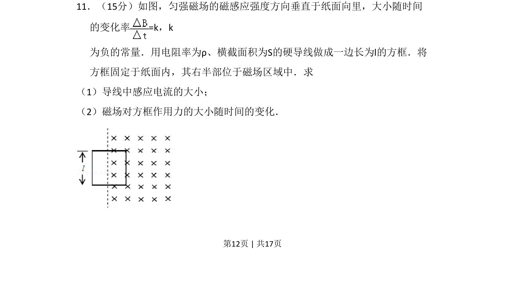
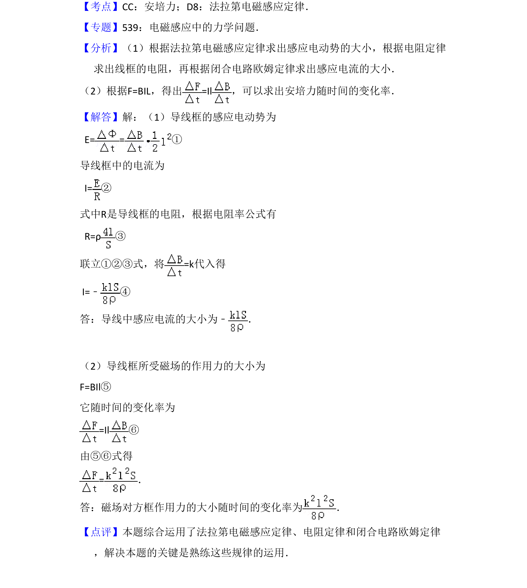

2009-全国Ⅱ-11
考点：法拉第电磁感应定律 电阻定律 安培力 变化率
题面


摘要
导线在变化磁场中产生感应电流，结合电阻定律和安培力公式求解电流大小及磁场力变化率。
关联考点
答案与解析

📄 原 PDF 第 12 页：
素材/真题/吉林/2008-2024·（吉林）物理高考真题/2009年高考物理试卷（全国卷Ⅱ）（解析卷）.pdf
题干文本
11．（15分）如图，匀强磁场的磁感应强度方向垂直于纸面向里，大小随时间 的变化率=k，k 为负的常量．用电阻率为ρ、横截面积为S的硬导线做成一边长为l的方框．将 方框固定于纸面内，其右半部位于磁场区域中．求 （1）导线中感应电流的大小； （2）磁场对方框作用力的大小随时间的变化．